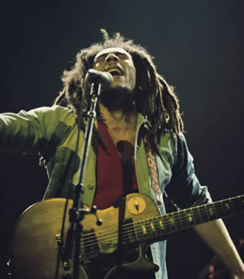

by Bob Marley
No woman, no cry;
No woman, no cry;
No woman, no cry;
No woman, no cry
[Verse 1]
I remember when we used to sit
In the government yard in Trenchtown
Oba, oba-serving the hypocrites
As they would mingle with the good people we meet
Good friends we have had, oh good friends we've lost
along the way (way)
In this bright future you can't forget your past
So dry your tears I say
No woman, no cry;
No woman, no cry;
Little darling don't shed no tears;
No woman, no cry
[Verse 2]
Said, said, said I remember when we used to sit
In the government yard in Trenchtown
And then Georgie would make the fire light
Log wood burning through the night
Then we would cook corn meal porridge
Of which I'll share with you
My feet is my only carriage
So I've got to push on through
But while I'm gone
Everything's going to be alright [x8]
No woman, no cry;
No woman, no cry;
No woman, no cry;
No woman, no cry
Also check out the video No Woman No Cry by Bob Marley